Classifying coal samples in the laboratory using ADR
A set of unknown powders, representing an existing hole from Bungur, Indonesia are analysed using ADR technology and X-ray Fluorescence (XRF). Adrok results show that sub-surface samples of coal can be identified from the ADR signal.
Project challenges
- ADR analysis of 300 Bungur powder samples in order to calculate:
- ADR ratio (E-ADR)
- Energy mean (E-mean)
- Energy gamma (E-gamma)
- Using the training information provided, analyse the data in order to find a spectral and/or coal and/or hydrocarbon ‘fingerprint’.
- Perform XRF analysis of all Bungur powder samples by using Niton FXL- FM analyser as a quality control check.
Geological context
A set of unknown powders, provided by WvTTS, from an existing hole in Bungur, Indonesia have been analysed using Adroks technology and an XRF analyser. These samples come from varying depths throughout the hole and WvTTS have provided a detailed description of the sub-surface where these samples have originated from. The sub-surface information is summarised as a Strip log, in figure 1.
Using the information provided in figure 1 as a training guide, Adroks technology is applied to the powders, in their depth order, to recognise a spectral and/or coal and/or hydrocarbon ‘fingerprint’. The spectral analysis can provide, to some extent, a qualitative analysis of the elements contained in the powder samples while the Energy analysis provides an indication of a change in material type. The XRF has been used as a validation / quality control step.
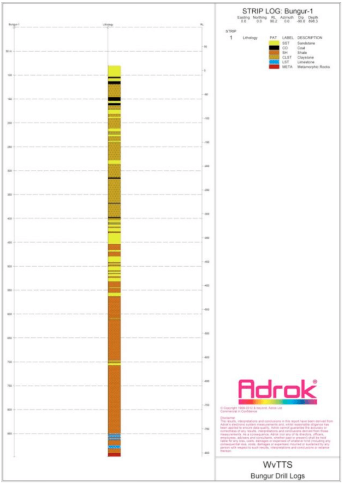 Figure 1: Bungur-1 logMethodology
The ADR scans of the powder samples are performed by acquiring a set of 3 scans for every sample. In addition to these scans, empty chamber and empty plastic container spectra are acquired in order to subtract these spectra from the powders (i.e. to remove background). In particular, the processes that are used in order to create these file can be summarised as follows:
- The ‘compare sample function’ in Radamatic is used to select the best 2 (out of 3) scans for each sample.
- These two scans are added using Principal Component Addition (PCA).
- An X3Y3 smoothing filter is applied to the PCA (and empty chamber) image.
- The image of the empty chamber is then subtracted from the PCA image.
Before the measurements were taken, it was necessary to check the stabilization of the A01- TCU01 unit. In order to do this, the source of the trace was referenced in the scope screen, by putting the 7th wave in the centre of the scope screen. After referenced, one scan every 20 minutes was acquired. Two parameters were checked, the central position of the 7th wave in the scope and the vertical “jitter” of the source trace.
An alternative way to verify the unit consistency is to record the references wave in the scope, show the reference wave in the scope and check how the source wave moves, respect to the reference wave. Following stabilisation of the radio frequency source, a set of 3 spectra of the empty chamber and empty container were recorded. After these scans, the powders were put into the plastic container and 3 scans for each powder were acquired. Then E-ADR, E-Mean and E-gamma are calculated.
Following completion of the ADR scans, the powders were reanalysed using X-ray Fluorescence. For each analysis performed, an XRF certificate was generated, this information is contained within ‘AdrokXRFresults.pdf’. It should be noted with the XRF results that when a 0 is recorded this can be due to the measured concentration being smaller than the error. The sensitivity of the XRF analysis could be improved by purging the detector with Helium or increasing the acquisition time for the lighter elements.
Adrok selected the second option because the elements of interest (Fe, Mn, Al, Cu, Mg, Ca) are in the main and lower filter. Silicon is the only element that requires the light filter mode. In order to minimize the error in the Silicon detection, the acquisition time was increased 3 fold.
Data Analysis
Among the numerous data analysis options that Adrok can employ, one such option is the creation of a false colour image from three separate analytical results. Details on how this is achieved are given in figure 2. The normalisation of analytical data to range from 0 to 1 provides a value that can be used as one of the components of an RGB image. Figure 3 demonstrates the type of image that can be expected. This example looks at sub-surface areas, creating unique colours for layers of fixed thickness, however, the same principles apply when comparing samples within the lab
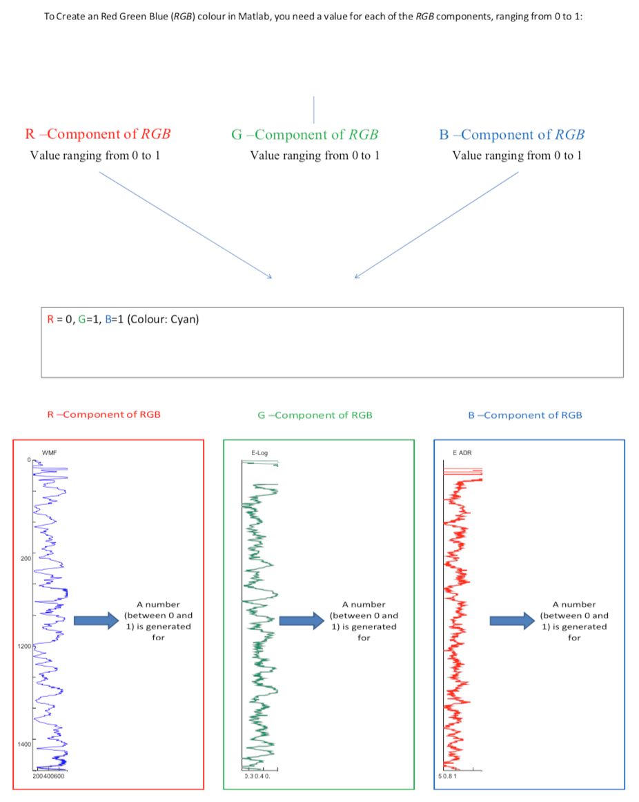 Figure 2: Description of how Adrok creates a unique colour and how Adroks analytical components can be normalised to create one of the 3 RGB components that can create such a unique colour. 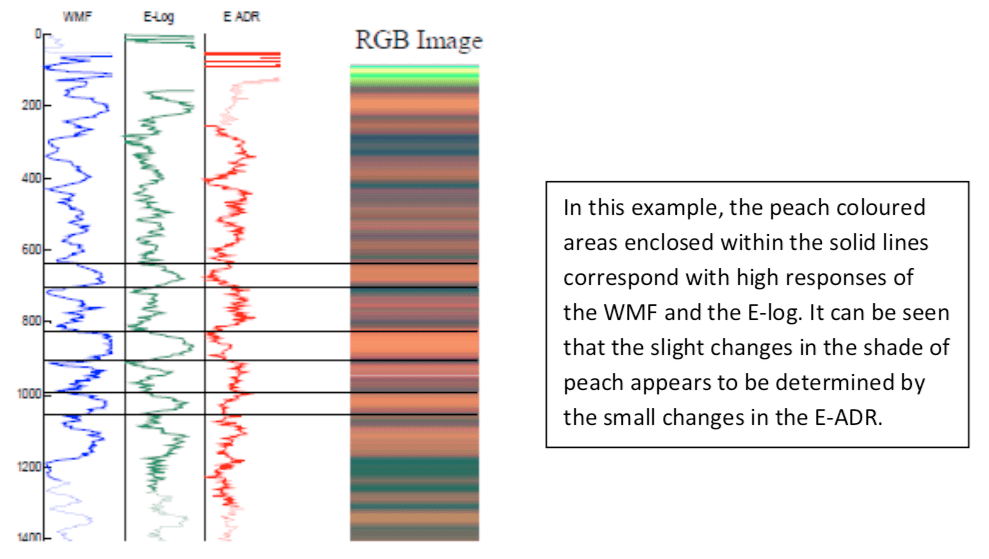 Figure 3: Demonstration of the type of image that can be created using Adrok’s analytical parameters and how this presentation can aid the identification of similarities and differences between separately analysed samples.Spectral Analysis
Adrok spectral lines give a qualitative description but not a quantitative one. However, Adrok can show how elements vary relative to each other within and between samples. At this current time, Adrok cannot attribute a specific number of spectral lines to a certain concentration. To show the relative variation of elements, spectral lines are normalised within a sample as demonstrated in figure 4.
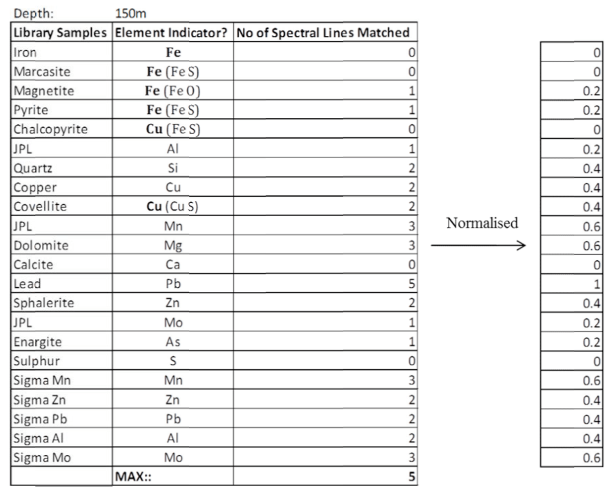 Figure 4: Adroks Spectral Analysis, normalisation procedure.Apparatus
The chamber setup configuration is presented in figure 5.
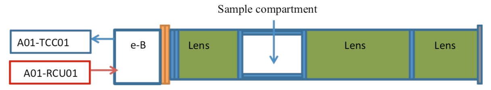 Figure 5: ADR chamber. The source A01-TCC01 is connected in the e-B TCC01 unit in the transmitter plug and the signal coming out from the e-B TCC01 unit is connected to the second channel of the A01-RCU01.Figure 6 shows the plastic empty container in the chamber and figure 7 presents the receiver trace and the parameters at the moment of acquisition.
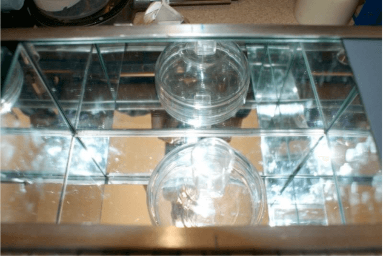 Figure 6. Example of sample position measurement (Empty plastic container) 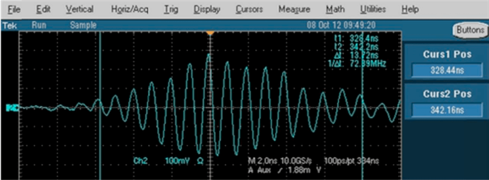 Figure 7. Stabilised receiver traceThe ADR scans enables the Energy ADR (E-ADR), Energy Mean (E-Mean) Energy Gamma (E-Gamma) to be calculated. These three parameters are plotted as RGB (Red, Green and Blue) colour maps in order to better visualize the changes of these parameters. The RGB data obtained are reported in figure 8 and 9.
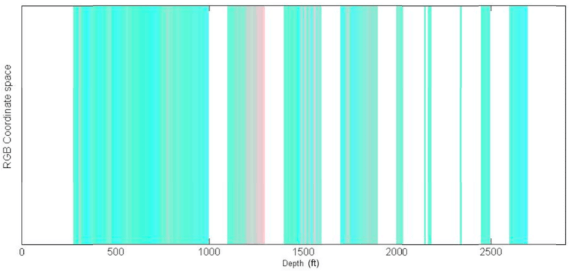 Figure 8. Bungur powder RGB graph for all the depth. 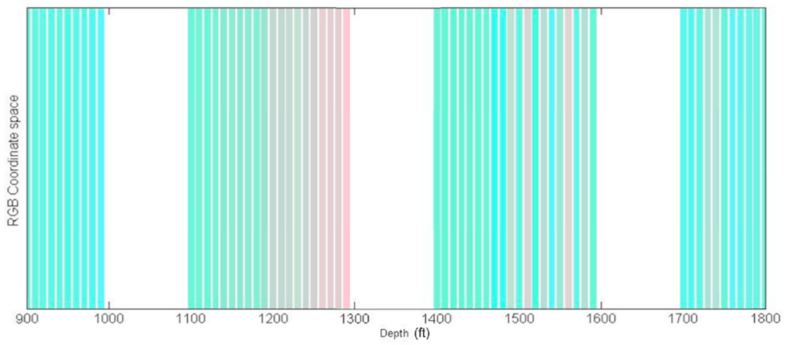 Figure 9. Bungur powder RGB graph from 900’ to 1800’.Spectral lines are generally used to obtain qualitative and quantitative information concerning the elements present in a sample. The X-ray Fluorescence analysis performed by using the Niton FXL-FM analyser it is reported in the following figure (10). It is clear from these results that the most prevalent elements within all samples are Iron, Calcium, Aluminium, Silicon and Sulphur.Using ADR technology, spectral lines are extracted and compared with the XRF results. Figures 11 and 12 present a comparison between the two techniques. The results of the XRF analysis have been normalised to make them comparable with the Adrok results.
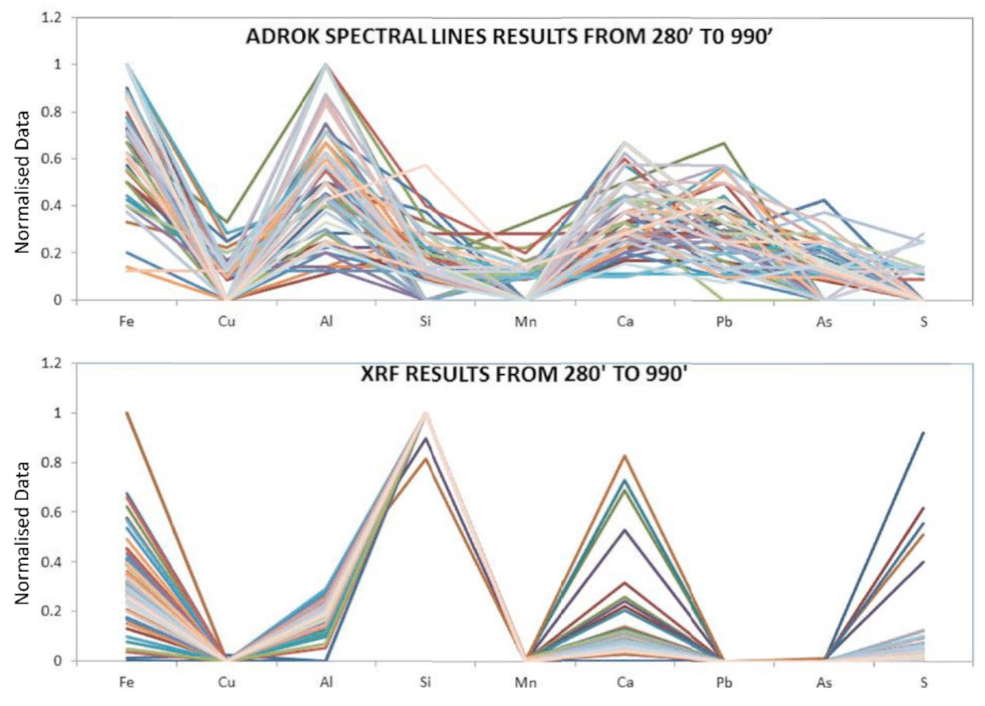 Figure 11. comparison between XRF and ADROK spectral lines from 280’ to 990’. 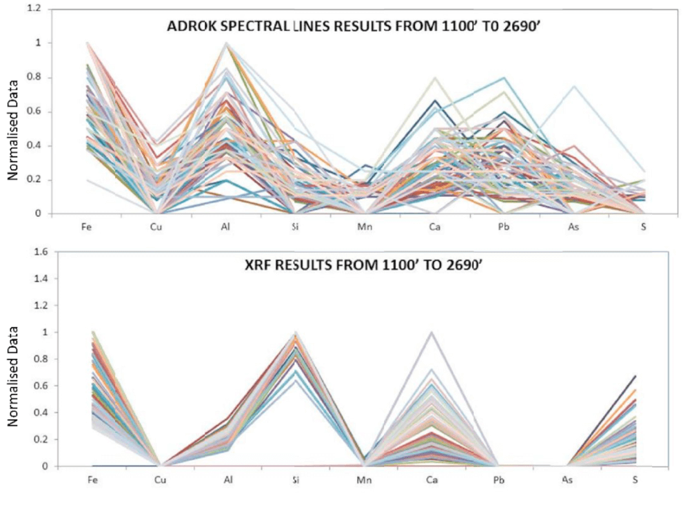 Figure 12. comparison between XRF and ADROK spectral lines from 1100’ to 2Discussion
The ADR scans enable the E-mean, E-ADR and E-gamma to be calculated for the Bungur powder samples. This data was used to create the RGB images presented in figures 8 and 9. The RGB image is a visual tool that allows the changes in E-ADR, E- gamma and E-mean to be highlighted. RGB images represent a 3 coordinate space whereby, the combination of the coordinates gives a defined colour. In order to obtain this, it is necessary take an average value for the E-ADR, E-Mean and E-Gamma for every sample, then find the maximum value for E-ADR, E-Mean and E-Gamma respectively, across all samples. Finally, by dividing every averaged value by the maximum value, a normalised value is obtained (these value range from 0 to 1). Once the E-ADR, E-Mean and E-Gamma are normalised, this gives a set of 3 numbers that vary from 0 to 1 forming a RGB spaces.
Figures 8 and 9 demonstrated the change of E-ADR, E-Mean and E-Gamma respectively, at different depths. The images show a distinct colour change, between 1190’ to 1290’ which is distinctly different from the other depths. This depth range is the same range where both the drill Log charts and the physical geological samples, contained in the lab, indicate the presence of coal. Figure 13 clearly demonstrates the different colours at this depth range.
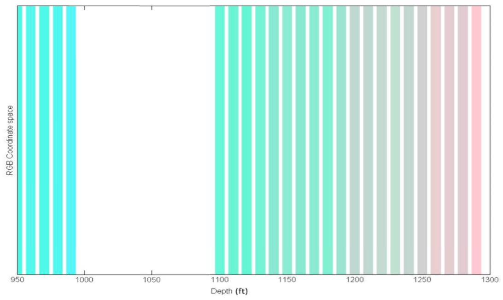 Figure13. Bungur powder RGB graph from 950’ to 1300’A qualitative description of the different samples can be obtained using XRF and ADROK spectral line analysis. The X-ray Fluorescence spectral results reported in figure 10 showed that the main elements present are; Fe, Ca, Al, Si, and S. Figures 11 and 12 reported the comparison between the XRF results and Adroks spectral line results. This comparison is necessary in order to validate the ability of Adroks technology to give the same spectroscopic information as that of the XRF measurements.
The comparison of both spectral results has shown Adroks spectral analysis to perform better for some elements compared to others. For example, in relative terms, the change in Fe and Ca from sample to sample is relatively satisfactory. However, Adroks spectral analysis underestimates Si and S content and overestimates As and Al. This is most likely due to the fact that Adroks database is not sufficiently representative of different elements and minerals.
Conclusions & Recommendations
A set of powders representing an existing hole in Bungur, Indonesia were analysed by using Adroks scanner and quality controlled using XRF analysis. Adroks technology is capable of highlighting the presence of coal from within the relevant powders. The results obtained show coal features between 1190’ and 1290’. This depth range is in good agreement with the drill Log chart provided by the client and the visual geological analysis performed in the lab. In addition to this, Adroks spectral line analysis gave a qualitative description of the elements present in the powders that was in satisfactory agreement with the results of the XRF.
In order to improve the quality of the spectral lines results, it is vital that Adrok’s spectral database is expanded to include other elements and minerals.
Field work is also recommended to gather real-world field conditions